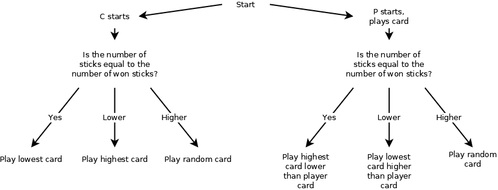
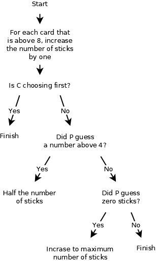

Timeline:
Click here to open the game.
The graphics of the cards were made by David Bellot and coauthors (see GitHub). They are licensed under LGPL 2.1 (see license).
Each game 20 rounds are played. The number of cards that each player has is determined by the number of the round. From the first to the last round, the number of cards on each hand is 10, 9, 8, 7, ..., 3, 2, 1, 1, 2, 3, ..., 7, 8, 9, 10 (starting at 10, down to 1, then 1 again, then back up to 10 again).
The cards are dealt from a standard deck of 52 cards in randomized order. Each player take turn dealing the cards, so that the same player deal the cards every other round.
Each round, the player opposite to the player that dealt the cards starts the round by guessing how many sticks (a win of played cards) he or she will win during that round. When guessing the number of sticks, the player making the first guess can make a guess from 0 up to the number of cards on each hand (a maximum of 10). The second player, when it is their turn to guess, may however not guess a number that would total the number of cards on each hand, if added to the guess of the first player. For example, if player A guesses 4 sticks, and 6 cards were dealt to each player, player B may not guess 2 sticks (but may guess above or below).
The player that guesses the highest number of sticks starts by playing a card that is on their hand. The other player must play a card of the same suite (if they have one) or play a card of a different suite if they don't. The player that played the first card wins the stick if the other player cannot play a higher card of the same suite, or if the other player plays a card that is lower (ace being the higest). The goal of each round is to win the same number of sticks that one guessed, but not exceed it. When a player wins a stick, the next play is started by that same player.
When the rounds that only deal one card to each player are played, each player's card is visible only to the opponent as opposed to the other rounds when the player's hand is private to the other player.
The score of each round is added to the total score. If a player reaches the same number of sticks that they guessed, they receive a score of 10 + the number of won sticks. So, for example, if player A won 6 sticks and guessed the same, they receive 16 points. However, if they won 2 sticks and guessed the same, they only receive 12 points.
When the last round has been played, the winning player is the one with the highest score. At the end of each round when all cards have been played, they are put back into the deck and the deck is randomized again before the cards are dealed during the next round.
There are two levels of difficulty implemented in the JavaScript game. On the easy setting, the computer will always play a random card from the set of playable cards, or a random card from the set of all cards. On the medium setting, cards are played according to the diagram below.

Guessing the number of sticks is done according to the diagram below, no matter the difficulty level.
